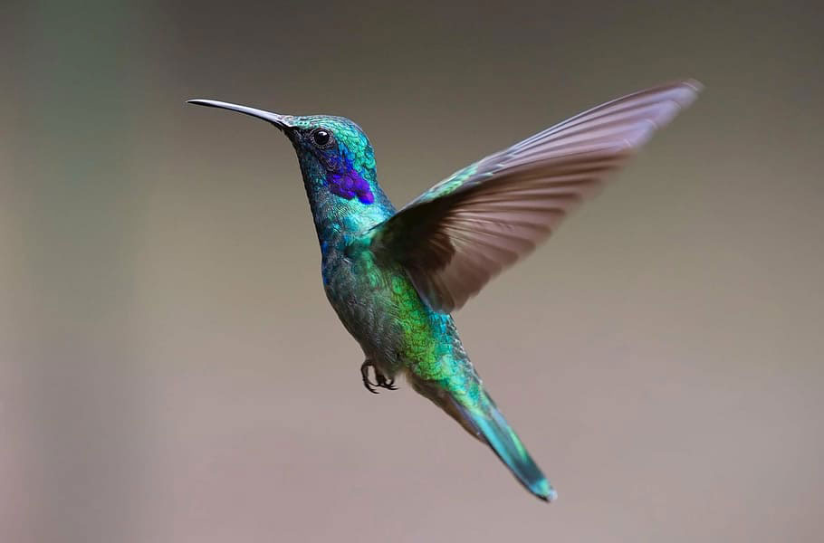
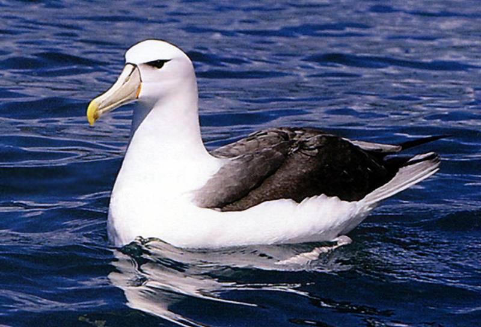

Águila Real
El águila real es una de las aves más imponentes y grandes, conocida por su aguda visión y su habilidad para cazar. Puede alcanzar velocidades de hasta 320 km/h en picada.

Curiosidades: Las águilas reales tienen una visión increíble, capaz de ver presas a más de 3 km de distancia.
Colibrí
El colibrí es el único pájaro capaz de volar hacia atrás y es famoso por su tamaño pequeño y su increíble velocidad. Es conocido por su capacidad para permanecer suspendido en el aire.

Curiosidades: El colibrí puede batir sus alas hasta 80 veces por segundo.
Albatros
El albatros es un ave marina que puede volar grandes distancias, siendo capaz de cruzar océanos enteros sin necesidad de aterrizar. Es conocido por tener la mayor envergadura alar de cualquier ave, llegando a los 3.5 metros.

Curiosidades: Algunos albatros pueden volar durante 2 años seguidos sin tocar tierra.
Murciélago
Los murciélagos son los únicos mamíferos que pueden volar activamente. Son conocidos por su habilidad para volar de noche y por utilizar la ecolocalización para orientarse en la oscuridad.

Curiosidades: Los murciélagos pueden consumir hasta 1,200 insectos por hora, ayudando a controlar las plagas.